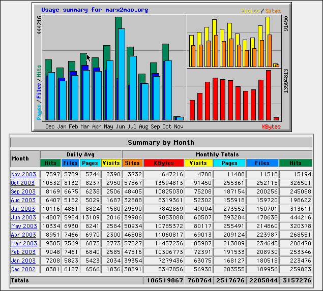

December 2002 - October 2003
|
|
The following charts and tables (courtesy of my ISP) present a graphic representation and a statistical summary of certain variables proporting to offer some measure of the nature and the extent of the activity that has taken place at this site over the past eleven months. Thank you all for your support.
|
|
|  | ||